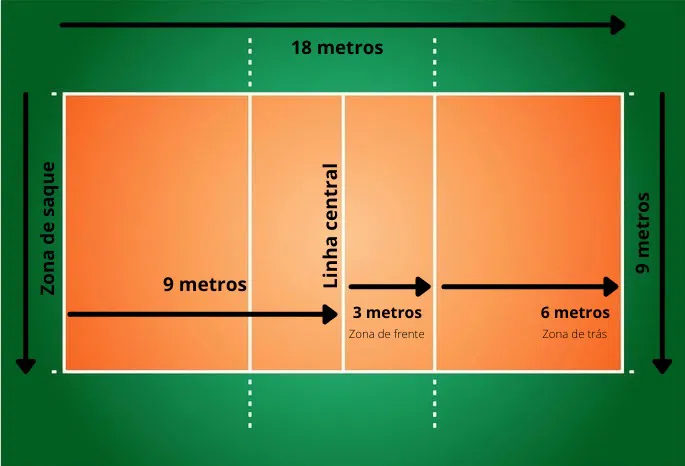

Regras do voleibol atualizadas (2021-2024)
- - Quadra de vôlei
-
A quadra de vôlei deve medir 18x9 m, ou seja, 18 metros de comprimento por 9 metros de largura.
Ao redor de toda a largura da quadra, deve haver uma área livre de no mínimo 3 metros, chamada de zona livre. A quadra e a zona livre juntas compõem a área de jogo.
A quadra é dividida em duas partes iguais no sentido do seu comprimento. Assim, cada equipe ocupa 9 metros de comprimento da quadra.
A área de frente mede 3 metros de comprimento a partir da linha central - a linha desenhada por baixo da rede. Essa é a zona de ataque e de bloqueio.
A área de trás mede 6 metros de comprimento a partir do limite da zona da frente. Essa é a zona de defesa e de recepção.
A zona de saque é onde o atleta saca a bola para colocá-la em jogo. Ela se estende a partir do limite da zona de defesa e termina no fim da zona livre.
Além disso, todas as linhas da quadra devem ter 5 cm de largura, bem como uma cor clara e diferente da cor do chão.

- - Rede de Vôlei
- A altura da rede, a contar do chão, é de 2,43 metros nos jogos masculinos, e 2,24 metros nos jogos femininos. A altura da rede deve ser de m, e o comprimento entre 9,5 e 10m.
As varetas que ficam nas redes são hastes flexíveis, com 1,80m de comprimento e 10mm de diâmetro.
Cada vareta é fixada na borda exterior de cada banda lateral da rede e ficam em lados opostos. As varetas são consideradas como parte da rede e delimitam lateralmente o espaço de passagem da bola.
A rede é colocada na vertical, na direção da linha central, que é a linha que divide a quadra em duas partes, e fica presa a dois postes de 2,55m de altura.
Os postes são colocados a uma distância de 0,5 metro a 1 metro das linhas laterais.
- - Bola de Vôlei
- O tamanho da circunferência da bola de vôlei é de 65 a 67 cm. Ela deve pesar de 260 a 280 gramas.
As bolas usadas no mesmo jogo devem ter o mesmo tamanho e o mesmo peso. Inclusive, a pressão interna da bola e suas cores devem ser iguais.
- - Jogadores de vôlei e posições na rotação ou rodízio
- Para um jogo de voleibol, uma equipe deve ser composta por no máximo 12 jogadores - 6 titulares e 6 reservas.
Dentre os jogadores, há: 1 capitão, que juntamente com o técnico é responsável pela conduta e disciplina da equipe; e 1 líbero, que não pode fazer saques e nem bloqueios.
O líbero deve usar um uniforme predominantemente de uma cor que não esteja presente no uniforme da sua equipe.
Antigamente, o líbero era o único jogador que não podia ser capitão, mas essa regra mudou em 2022.
Os jogadores são numerados conforme as posições que assumem na quadra.
Na linha da frente, devem ficar os seguintes jogadores: o jogador 4 (do lado esquerdo), o jogador 3 (no centro), e o jogador 2 (no lado direito).
Na linha de trás, devem ficar os seguintes jogadores: o jogador 5 (do lado esquerdo), o jogador 6 (no centro), e o jogador 1 (no lado direito).
Contudo, os jogadores precisam estar posicionados dessa forma apenas no momento antes do saque, tanto da equipe adversária quanto da própria equipe.
Após o saque, os jogadores podem se movimentar livremente pela quadra.
A mudança das posições feitas pelos jogadores é chamada de rotação. A cada novo saque, os jogadores fazem a rotação no sentido horário. Assim, cada jogador assume uma nova posição.
Por exemplo, o jogador que está no lado direito da zona de frente, que é o jogador 2, assume a posição do jogador que está atrás dele, que é o jogador 1
(aquele que realizou o último saque).
- - Marcação de pontos, vitórias de set e de partida de vôlei
- No vôlei, os pontos são marcados quando a bola toca a quadra da equipe adversária, quando a equipe adversária comete uma falta e quando a equipe adversária é penalizada.
A partida de vôlei não tem duração fixa. Um jogo é composto por 3 sets de 25 pontos. Para ganhar o jogo é preciso vencer 3 sets.
No caso de cada uma das equipes ter vencido 2 sets, é disputado o 5º set. O 5.º set vai somente até os 15 pontos, sendo também necessário terminar com uma
diferença de 2 pontos da equipe adversária, por exemplo, 15 x 13 ou 17 x 15.
A vitória de cada set é dada à primeira equipe que marcar os 25 pontos, mas é necessário ter uma diferença de 2 pontos da equipe adversária, por exemplo, 26 x 24 ou 29 x 27.
- - Faltas no vôlei
- No vôlei, as principais faltas são:
DOIS TOQUES: quando o mesmo jogador dá dois toques consecutivos na bola ou quando a bola tocar no mínimo duas vezes consecutiva em várias partes do corpo.
QUATRO TOQUES: esse tipo de falta ocorre quando a equipe toca na bola mais de três vezes antes de enviá-la para o time adversário. No entanto, há uma exceção a essa regra, permitindo
quatro toques, desde que isso inclua o toque do bloqueio. Por exemplo, se equipe adversária atacar, e a bola bater no bloqueio da equipe, a equipe pode dar mais 3 toques na bola para tentar atacar de volta.
TOQUE APOIADO: quando um jogador se apoia em um colega da equipe, na rede ou nas antenas para tocar na bola.
CONDUÇÃO: quando um jogador segura a bola ou a lança, em vez de rebatê-la durante a disputa de pontos.
FALTA NA ROTAÇÃO: quando, no momento do saque, os jogadores não estão posicionados conforme a sua numeração.
BOLA FORA DEPOIS DO SAQUE, NO ATO DO BLOQUEIO: quando a bola vai para fora depois do saque, durante o ataque ou no bloqueio.
GOLPE NA BOLA DA QUADRA ADVERSÁRIA: quando um jogador golpeia a bola que continua na quadra da equipe adversária.
BLOQUEIO DO SAQUE ADVERSÁRIO: quando o saque da equipe adversária é bloqueado pela outra equipe.